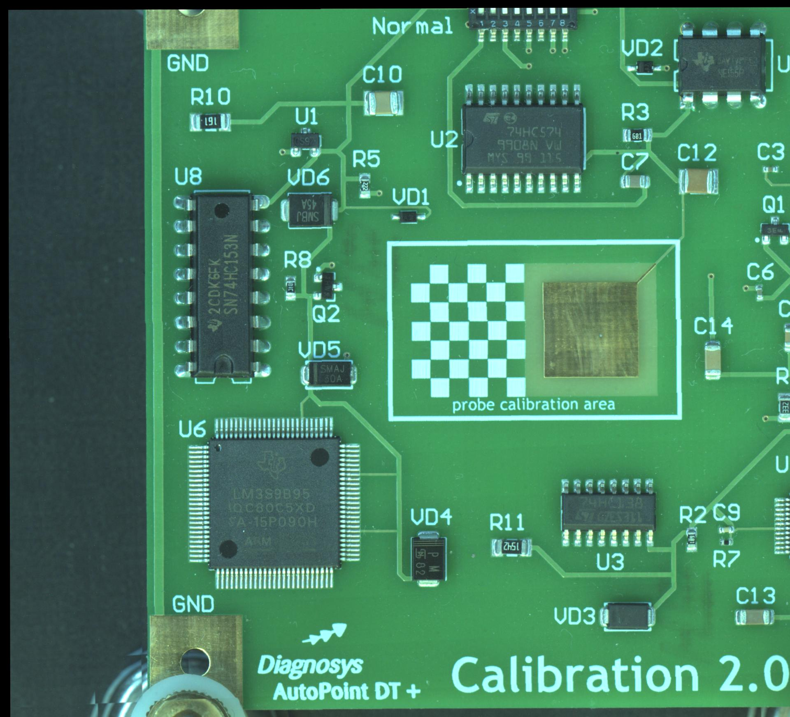

Общая информация |
|---|
|
Диагностическая система: EyePoint P10 Версия: 1.8.10 (368c53a) Дата: 2024.10.07 11:38:46 Рабочая станция: DESKTOP-8K3PB7U Операционная система: Windows 10 64bit Длительность тестирования: 0 мин 12 сек Название платы: 0001_2024_10_07_11-38 Количество неисправных компонентов/количество компонентов: 0/1 Доля неисправных компонентов: 0.0% Количество неисправных точек тестирования/количество точек тестирования: 0/2 Доля неисправных точек тестирования: 0.0% Допуск: 15.0% HTML: v4.01 Просмотреть полный отчет Просмотреть изображение платы |
Карта неисправных точек тестирования |
|
 |